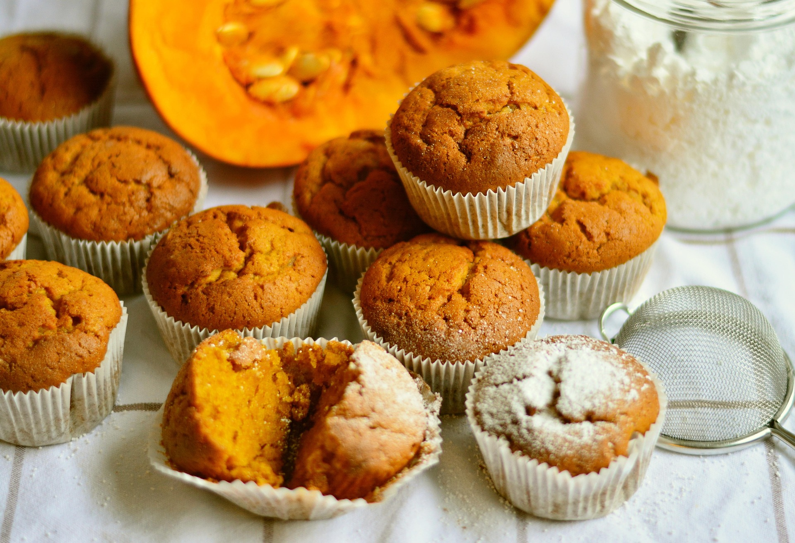

Home
Pumpkin Spice Muffins for Halloween

Pumpkin Spice Muffins recipe for Halloween treats
These delicious pumpkin spice muffins are perfect for an easy to make Halloween treat!
These easy to make autumn muffins use simple, easy to find ingredients and will make your house smell like a pumpkin spice bakery.
Ingredients
- Cooking Spray
- 3/4 Cup Melted Butter
- 1 (15 oz) Can of Pumpkin Puree
- 3/4 Cup Brown Sugar
- 1/4 Cup Water
- 2 Large Eggs
- 1 Teaspoon Vanilla Extract
- 1 3/4 Cups all-purpose flour
- 1/2 Cup white sugar
- 2 Teaspoons Pumpkin Pie Spice
- 1 Teaspoon Salt
- 1 Teaspoon Baking Soda
- 1 Teaspoon Ground Cinnamon
- 1/2 Teaspoon Ground Nutmeg
- 1/4 Teaspoon Baking Powder
Steps:
- Step 1: Preheat your oven to 375°F (190°C) and line a 12-cup muffin tin with paper liners.
- Step 2: In a large bowl, stir together the melted butter, granulated sugar, and brown sugar, then whisk in the eggs, pumpkin puree, water, and vanilla extract.
- Step 3: Mix flour, white sugar, pumpkin spice, salt, baking soda, cinnamon, and baking powder together in another large bowl;pour into pumpkin mixture. Stir until well combined.
- Step 4: Spoon the batter into the prepared muffin cups, filling each 3/4 full.
- Step 5: Bake in the preheated oven until muffins are golden and spring back easily when pressed, 25 to 30 minutes.